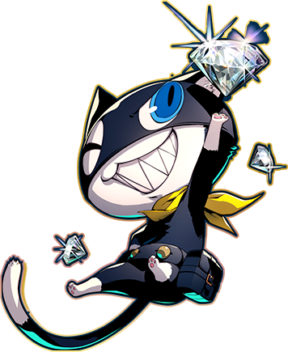
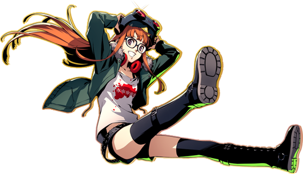
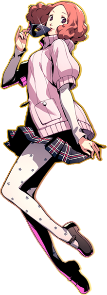

The Phantom Thieves of Hearts

Protagonist
Persona: Arsène
A second-year high school student who moved in the spring and transferred to Shujin Academy. One day,
with his back against the wall, his powers as a Persona-user awakens. He lives as a normal student
in the day as a tenant of a café owned by a family friend. After school, he turns into a Phantom
Thief who upheaves the city.

Ryuji Sakamoto
Persona: Captain Kidd
A fellow second-year student at Shujin Academy. Although his words and actions can be crude, he has a
caring, dependable, and outgoing personality. Due to an incident, he is labeled as a delinquent and
fellow students begin distancing themselves from him. After befriending the recently transferred
protagonist, he awakens his abilities as a Persona-user.

Morgana
Persona: Zorro
A mysterious cat-like creature that the protagonist and Ryuji encounter in the Metaverse, he decides
to accompany them shortly after. He can communicate with humans and claims to be able to transform
into various objects, yet many things about him remain shrouded in mystery. Although he can be
aggressive at times, he’s also incredibly selfless and supports his teammates. He often exclaims,
“I’m not a cat!”

Ann Takamaki
Persona: Carmen
A fellow second-year student at Shujin Academy, and a classmate to the protagonist. She’s an
attractive girl who is one quarter American and models on the side. She’s free-spirited and has an
honest personality, but due to her striking appearance, she’s isolated from everyone around her.
After befriending the protagonist, an incident acts as a catalyst to awaken her abilities as a
Persona-user.

Yusuke Kitagawa
Persona: Goemon
A second-year art student at Kosei High School who specializes in painting. His attractive appearance
draws attention, but his unique artistic sensibilities often lead to him being out of touch with
others. He‘s a live-in apprentice for Ichiryusei Madarame, a master artist. A turn of events leads
him to befriend the protagonist and awaken his abilities as a Persona-user.

Makoto Niijima
Persona: Johanna
A third-year student attending Shujin Academy. She is intelligent, well-mannered, and serves as the
student body president. Calm and collected, she has a strong sense of responsibility and is quick to
take action, but due to her straight-forward personality she can also be quite stubborn. A series of
events trigger her powers as a Persona-user before she joins the Phantom Thieves. She acts as the
brains of the team.

Futaba Sakura
Persona: Prometheus
A girl one year younger than the protagonist. She boasts an incredibly mathematical brain along with
a prodigious talent for computer programming, but struggles with social communication. She lives a
cloistered life trapped in her own home. She encounters the protagonists one day and awakens her
abilities as a Persona-user.

Haru Okumura
Persona: Milady
A third-year student at Shujin Academy, and the daughter of the CEO of one of the largest food
companies in the country. Her soft appearance and docile personality present someone capable of
maintaining positive relationships, but due to the environment she grew up in, she struggles to find
value in building meaningful relationships, often avoiding them altogether. What will lead her to
awakening her abilities as a Persona-user...?

Kasumi Yoshizawa
Persona: Cendrillon
A beautiful girl who transfers to Shujin Academy the same spring as the protagonist. She’s a talented
gymnast since middle schooland Shujin Academy holds high hopes for her because of her excellent
athletic records.

Goro Akechi
Persona: Robin Hood
A third-year high school student who is also a professional detective. With a track record of solving
numerous crimes, he maintains a respectable reputation even among law enforcement officials. His
sharp intellect, sociable personality, and good looks attracts the attention of many. He frequently
appears on media, often touted as the “The Second Coming of the Detective Prince.” Although he is
formally in the position of chasing after the Phantom Thieves, he eventually works alongside them.